In the case of linear constraines atomic coordinates of atoms (either different, the same or both) may be related linearly to each other. Let us collect all those related atomic Cartesian coordinates into a set
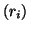
( is not an atom number, but rather a number in the set). Then, the linear relationship between memebers of the set can be expressed as follows: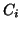
are some constants defined by the nature of the specific constraint. Note that not all atoms and all , ,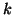
.
The simplest example is to allow atoms to move only along certain
directions. Simply by specifying relaxation flags iRx, iRy,
iRz in the input (opposite to atomic coordinates, see section
8.3.5) one can already allow atoms to move
only along , or  axes or in
axes or in
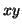
,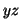
or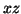
planes; additional constraines are not required in all those cases. However, imagine you would like to allow, say, atom 5 to move only along the (111) direction, i.e. to have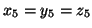
. In this case you will have to specify the following 2 constraints: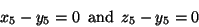
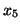
is considered as the redundand coordinate from the first constraint and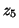
- from the second (since the coordinate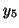
must not be chosen as a redundand coordinate as it appears in both conditions), the only ``active'' coordinate in this case will be . In more complicated cases different atoms may be involved as well.The first coordinate in the constraints equations like Eq. (20) with nonzero coefficient
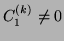
, as supplied in the input (section 8.8), is treated automatically as the redundand variable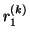
for the constraint . This allows to express the redundant variable via all others involved in the given constraint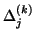
to the ``force''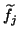
on any of the nonredundand atoms due to the constraint as: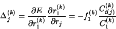
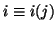
is the position of atom in the list of atoms involved in the constraint . The total ``force'' is obtained by adding corrections due to all constraints to the physical force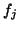
.